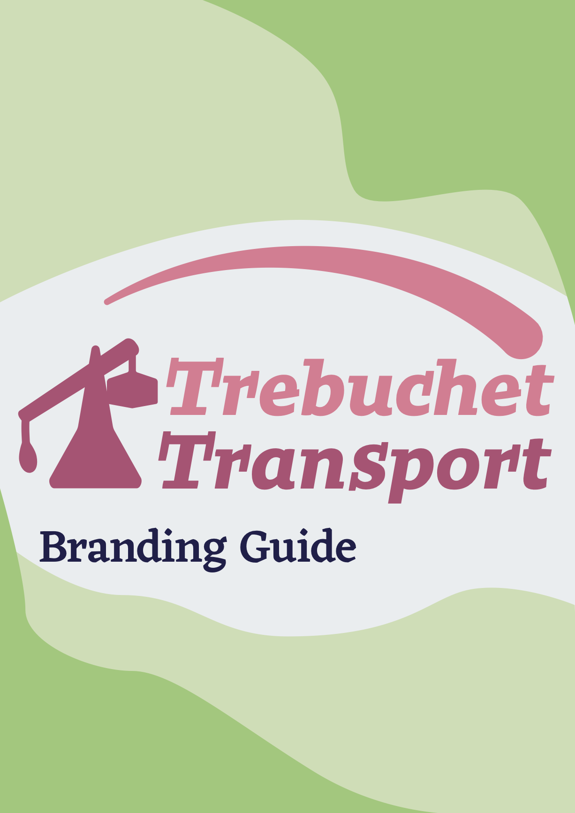
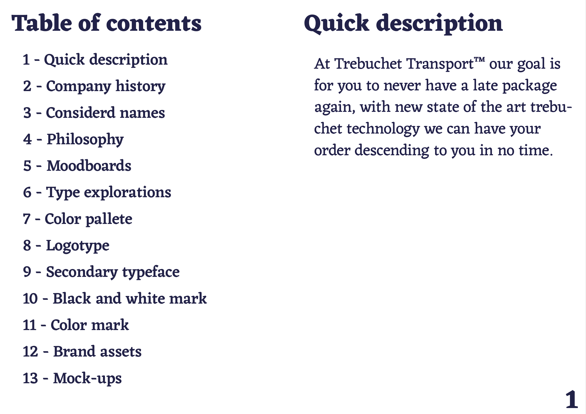
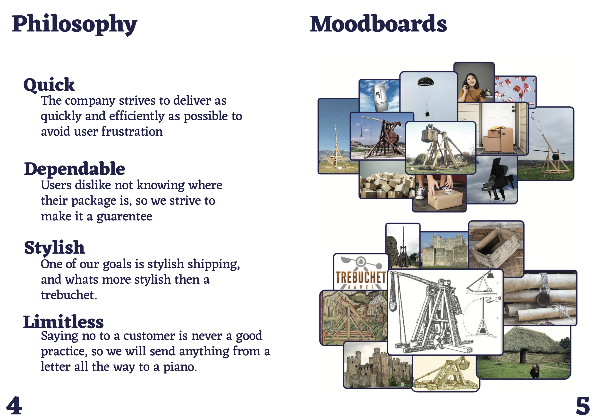
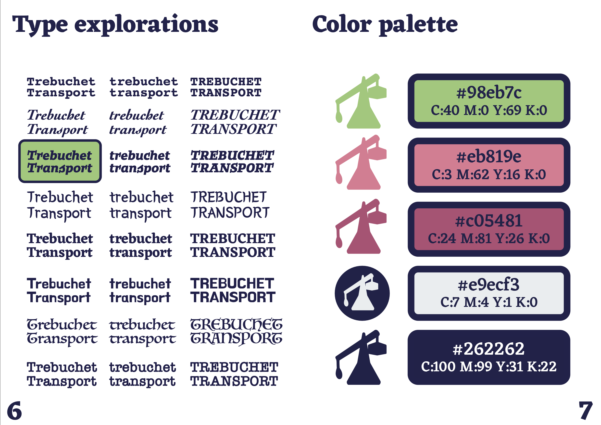
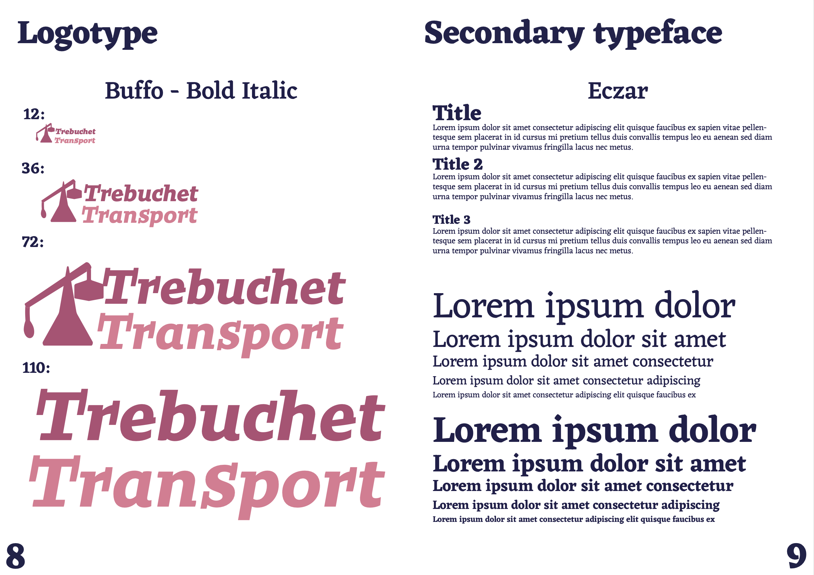
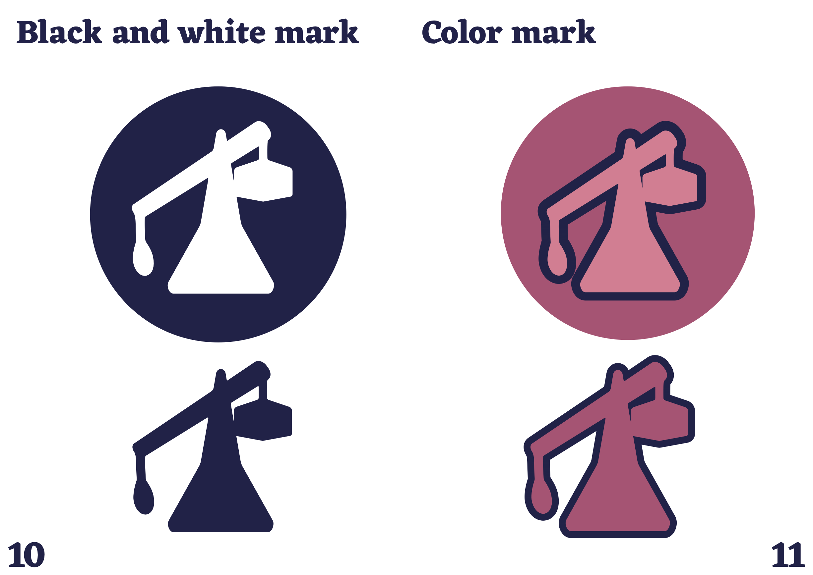
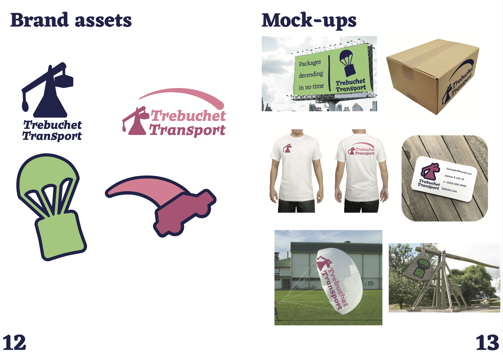

![some name ideas and the company history: The company was founded when our insane found-er, Dan Pakins, in 2012 had the incredibly unique idea of instant shipping by firing it across an entire city. After cannons were deemed too destructive and drones too costly, Dan turned to the humble trebu-chet. With our first location in Dannebrog Nebraska we were able to deliver packages to all 273 residents 10% faster, with great local reviews such as:My mail gets here too fast, it almost always makes it to my backyard, I live in constant fear of the packages descending from heaven, Its fair to say they cant get enough. After the huge success of our first location we quickly opened up 3 more in Toppenish Washington, Pawnee Oaklaho-ma, and Westerly Rhode-Island. With that we present to you a new small town staple coming to a village near you! Your mail can fly to you in no time.](images/Trebuchet3.png)
The branding guide project was the main goal of graphic design 2, we started by making a fake client and creating brand material for then. My project was a shipping brand called "Trebuchet Transport". Throughout the project we got to go back and forth with a more expirienced graphic designer who would review our work and give consturctive feedback. Overall the project taught me about how to make useful designs and how to itterate well.






